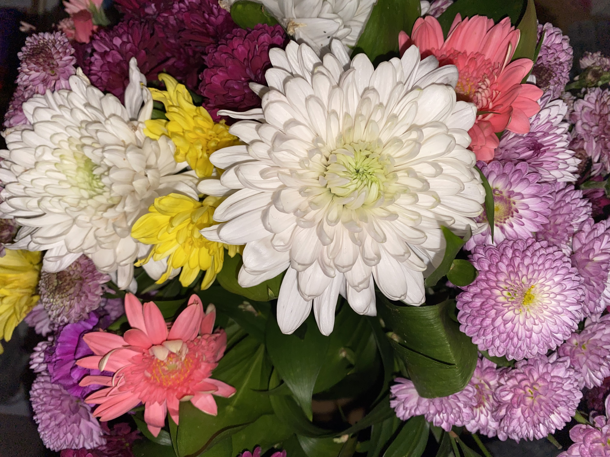

Welcome!
Welcome to my professional portfolio, a digital showcase of my journey, skills, and experiences. Here, you will find a comprehensive view of who I am, what I do, and the unique qualities I bring to the table. Whether it's my academic achievements, professional experiences, or technical skills, this page is designed to highlight my dedication to growth and excellence.
Enjoy exploring, and thank you for visiting! üòä
Discover more about me, my skills, and my experiences below.
About Me
Hi, I'm Tuana.
In this section, I will talk briefly about my educational background. In 2019, I was accepted to the Computer Education and Instructional Technologies department at the Middle East Technical University and started the preparatory program. I have currently completed my 7th semester of undergraduate studies and will graduate from my major at the end of my 8th semester. As you can see in the table below, I am registered for a minor program. I applied for a minor at the end of my freshman year and was accepted. I will complete my minor program one semester after finishing my major, in February 2026.
At the bottom of the table there is a section where I talk about what I like to do, you can read that section if you want to learn more about me.
| Degree | Institution | Faculty | Department | Graduation Year |
|---|---|---|---|---|
| Bachelor's Minor Program |
Middle East Technical University | Faculty of Engineering | Computational Science & Engineering | 2026 |
| Bachelor's Major Program |
Middle East Technical University | Faculty of Education | Computer Education & Instructional Technology | 2025 |
| High School | Luleburgaz Anatolian High School | 2019 |
What do I enjoy doing?
I believe there is a lot to learn in life and I love discovering new things while doing things I enjoy. I am happy to drive for hours and have fun and pleasant conversations during driving. I also like to discover new places with my friends and collect memories for both the future and the past. Even though I don't like going out very much in the winter months, I love spending time outside and walking when it snows. Contrary to winter, I like to spend time outside in the summer. In the summer months, I enjoy fishing with my father and sewing with my mother to try new things. Other activity I really enjoy is lying on the grass at DEVRIM and reading a book for hours. Wanting to immortalize that moment at any given moment on campus is enough for me to take a photo at that moment. Here are some photos in my perspective..
Skills
Language Skills
▼
When I was given German as an elective in high school, I realized that I enjoyed learning a language. Studying at English medium university gives us to learn a new language, but I also want to learn another language in addition to English. Then, I had a goal of learning a language in addition to English before I graduate university. German is a language that requires effort and time, and since I don't have much time, I progress more slowly, while I can learn Swedish a little faster. Watching German series with English-German double subtitles also helps me learn the language. Also, when I watch Swedish series, I have the opportunity to learn new things about pronunciation and the culture of the language.
Technical Skills
▼
- Beginner
- C#
- Java
- Swift
- Project Management
- Project Planning
- Agile Methodology
- Intermediate
- HTML
- CSS
- Python
- Blender
- Adobe Photoshop
- Adobe Illustrator
- MS Office Programs
Soft Skills
▼
What soft skills do I have?
| Soft Skills | |||
|---|---|---|---|
|
|
|
|
|
|
|
|
My Experience
University Societies

Volunteer Internship
Only the planning phase would be prepared and such a project would be considered as done. Approximately 3 weeks were given for this preparation process. The specific problems I experienced in the group I randomly joined allowed me to improve my tolerance level and emotional state control. Even though we went through a difficult process, we completed the internship in winner place. You can access more information from this link.
Volunteer Work
This volunteer work, which lasted about 7 months, not only gave me the opportunity to improve myself, but also helped me improve my time management and planning skills by managing my school and work schedule together.
Having the opportunity to gain experience in the field of design also gave me the opportunity to discover whether I liked this field or not.
I also translated all the content in the game from English to Turkish, and completed the Spanish translation with the help of ChatGPT.


The first three images above are the intro page from the first version of the game and the start page with the powers the character has.
The last iamge is a visual containing 35 frames I prepared for the character's walking animation.

This game is designed by Keep The Engine company and you can click on the link to get updated information and see more about the company.